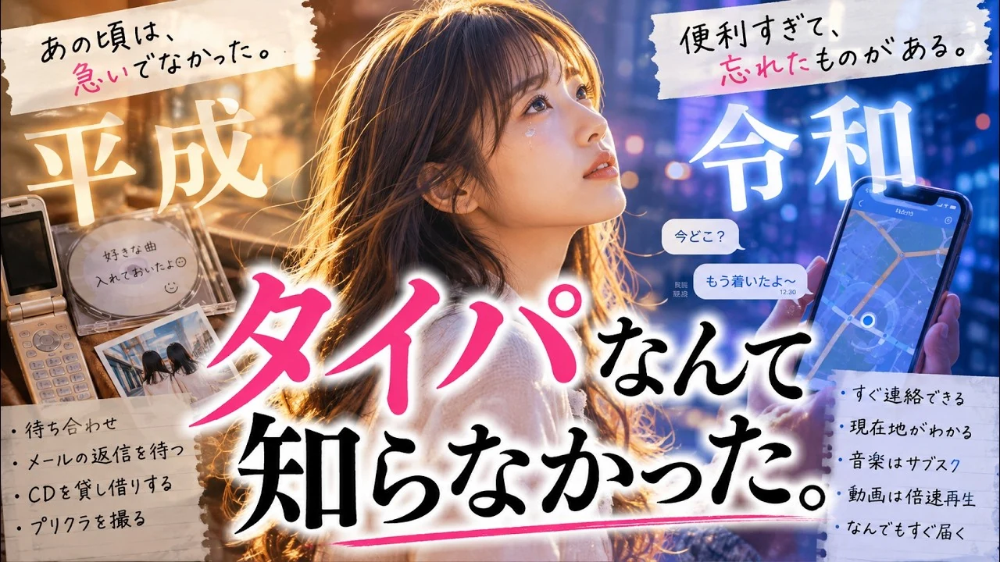
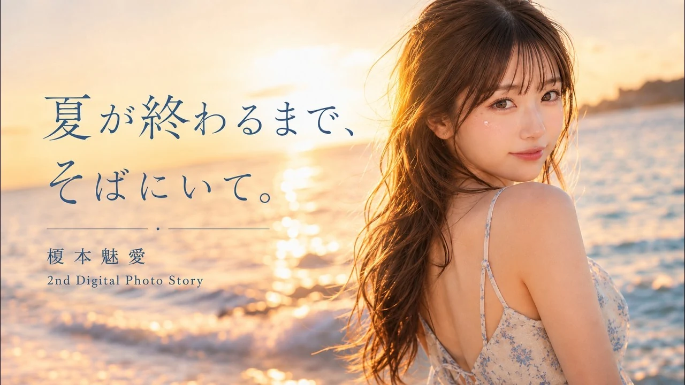
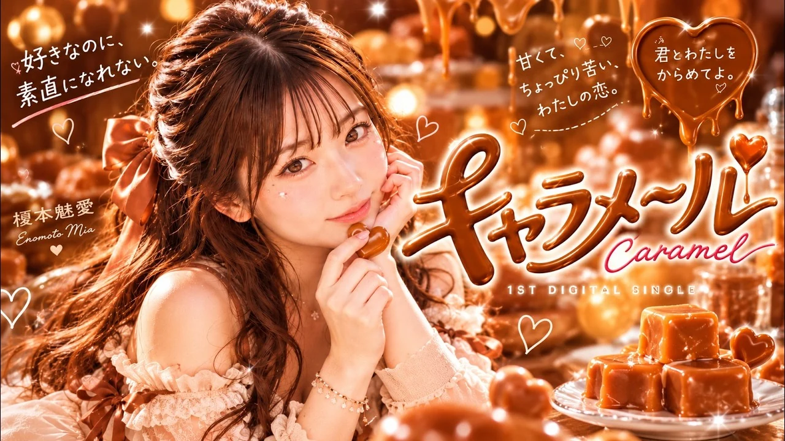
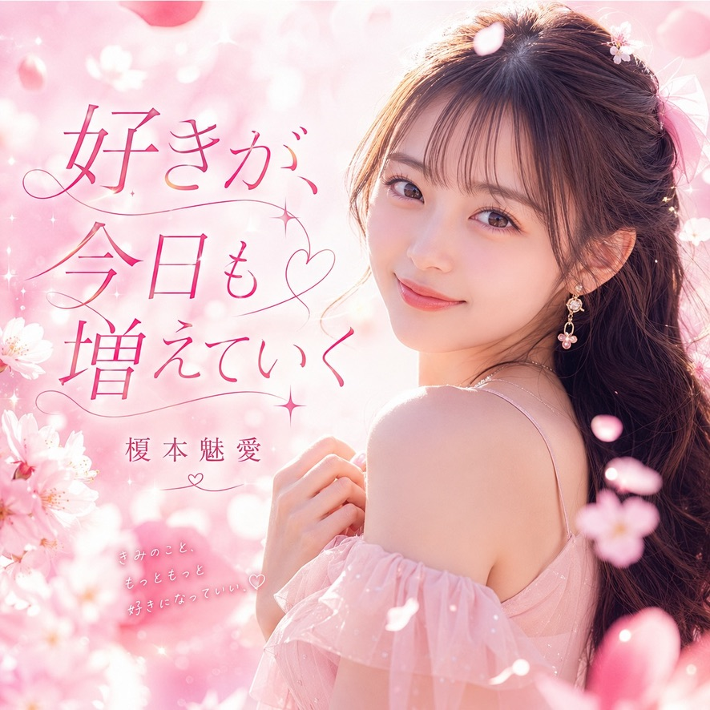
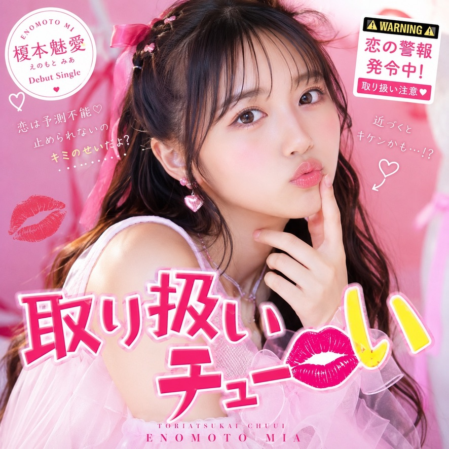
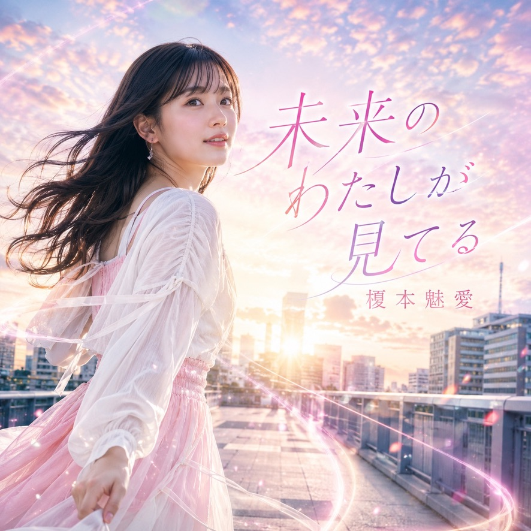
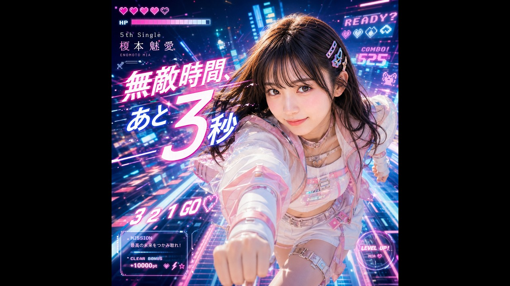
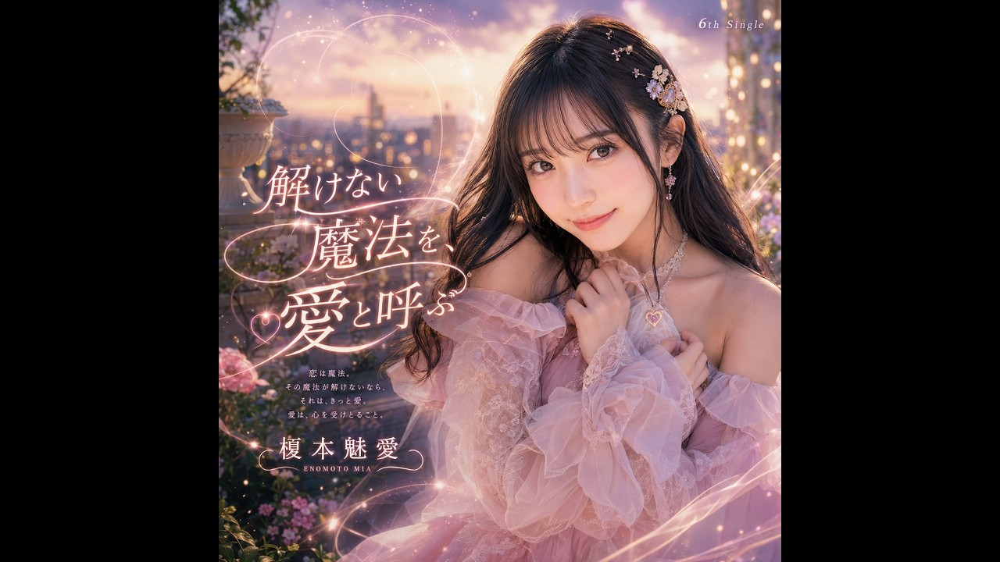
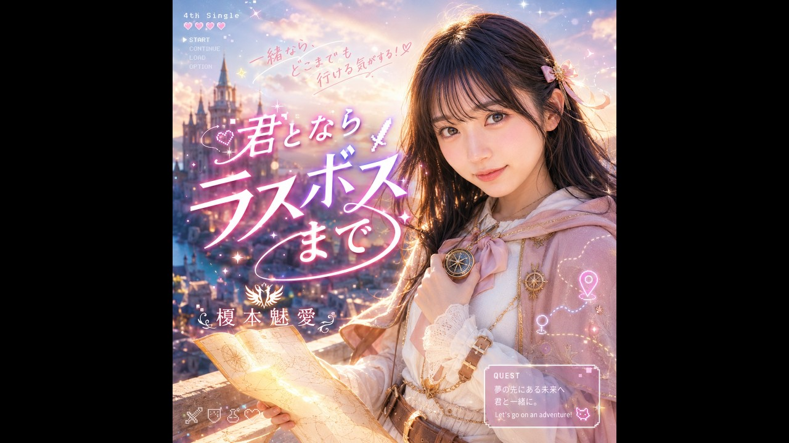
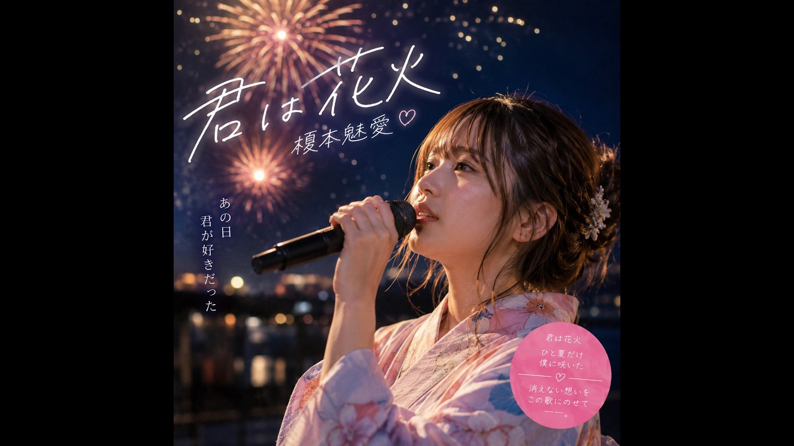

KARAOKE / JOYSOUND
榎本魅愛「花言葉」
全国のJOYSOUND対応機種 · 公式音源
STREAMING RELEASE
2026年9月11日リリース
花言葉
榎本魅愛
— 2026年9月11日 配信開始
Label：SUZUKA
Distributed via TuneCore Japan
ENOMOTO MIA
SEPTEMBER RELEASES
Asia / Tokyo花言葉NOW STREAMING · NOW STREAMING花言葉KARAOKE / JOYSOUND百万告STREAMING RELEASE · NOW STREAMINGOFFICIAL RELEASE 2026.07.12Hello Hello HalloweenSTREAMING RELEASE · NOW STREAMINGOFFICIAL RELEASE 2026.09.16取り扱いチュー💋いSTREAMING RELEASE · NOW STREAMINGOFFICIAL RELEASE 2026.07.14September BlueNEW RELEASE · NOW STREAMINGOver DriveNEW RELEASE · NOW STREAMING恋するすべての瞬間ALBUM RELEASE · NOW STREAMINGまた、君に恋をする。NEW RELEASE · NOW STREAMING夏が終わるまで、そばにいて。STREAMING RELEASE · NOW STREAMINGOFFICIAL RELEASE 2026.08.14キャラメ〜ルSTREAMING RELEASE · NOW STREAMINGOFFICIAL RELEASE 2026.08.13タイパなんて知らなかったSTREAMING RELEASE · NOW STREAMINGOFFICIAL RELEASE 2026.08.16Eternity of Flower WordsNEW RELEASE · UPCOMING恋愛対象外 (仮)NEW RELEASE · UPCOMING
9月21日 ストリーミング配信NEWSを見る ↗SUZUKA Original AI Artist / Solo
榎本魅愛
ENOMOTO MIA
恋するすべての瞬間を歌にする、SUZUKAのVirtual AI Artist。

世界観
恋する瞬間のときめき、迷い、勇気を、色彩豊かな物語として歌う。
音楽性
J-POP、ロマンティックポップ、バラードを軸に、日常の感情をまっすぐなメロディへ変える。
J-POP / サマーポップ / シネマティック / バラード / ファンタジーポップ / ロマンティックポップ / 応援歌
最新曲
SUZUKAおすすめ
初めて聴くなら、この3曲
正本のfeatured・代表設定・recommendationWeight・公開日の順で決定的に選んでいます。実人気順位ではありません。
公開作品一覧















Streaming Release
STREAMING RELEASE · NOW STREAMING / 配信開始
STREAMING RELEASE · NOW STREAMING / 配信開始
STREAMING RELEASE · 配信予定
STREAMING RELEASE · NOW STREAMING / 配信開始
STREAMING RELEASE · NOW STREAMING / 配信開始
STREAMING RELEASE · NOW STREAMING / 配信開始
STREAMING RELEASE · NOW STREAMING / 配信開始
STREAMING RELEASE · NOW STREAMING / 配信開始
STREAMING RELEASE · NOW STREAMING / 配信開始
STREAMING RELEASE · NOW STREAMING / 配信開始
STREAMING RELEASE · NOW STREAMING / 配信開始
STREAMING RELEASE · NOW STREAMING / 配信開始
STREAMING RELEASE · NOW STREAMING / 配信開始
STREAMING RELEASE · NOW STREAMING / 配信開始
STREAMING RELEASE · NOW STREAMING / 配信開始
STREAMING RELEASE · NOW STREAMING / 配信開始
STREAMING RELEASE · NOW STREAMING / 配信開始
STREAMING RELEASE · NOW STREAMING / 配信開始
STREAMING RELEASE · NOW STREAMING / 配信開始
STREAMING RELEASE · NOW STREAMING / 配信開始
STREAMING RELEASE · NOW STREAMING / 配信開始
STREAMING RELEASE · NOW STREAMING / 配信開始
STREAMING RELEASE · NOW STREAMING / 配信開始
Upcoming
現在確認済みのUpcomingはありません。
Official MV / Shorts / News / Gallery
OFFICIAL YOUTUBE
Official Shorts / Videos
 榎本魅愛『キャラメ〜ル』🍮♡｜君を見るたび、とろけちゃう。#ShortsYouTube Shortsで見る ↗
榎本魅愛『キャラメ〜ル』🍮♡｜君を見るたび、とろけちゃう。#ShortsYouTube Shortsで見る ↗ 君は負けない｜榎本魅愛「その一歩は、未来へ続いてる。」#shortsYouTube Shortsで見る ↗
君は負けない｜榎本魅愛「その一歩は、未来へ続いてる。」#shortsYouTube Shortsで見る ↗ 榎本魅愛「花言葉」｜SUZUKA LIVE FRAME #shorts #suzuka #jpop #kpop #オリジナル曲YouTube Shortsで見る ↗
榎本魅愛「花言葉」｜SUZUKA LIVE FRAME #shorts #suzuka #jpop #kpop #オリジナル曲YouTube Shortsで見る ↗ 榎本魅愛『はじめまして、奇跡』｜ #shortsYouTube Shortsで見る ↗
榎本魅愛『はじめまして、奇跡』｜ #shortsYouTube Shortsで見る ↗ 榎本魅愛】恋の魔法が解けないなら、それを愛と呼んでもいいですか。#ShortsYouTube Shortsで見る ↗
榎本魅愛】恋の魔法が解けないなら、それを愛と呼んでもいいですか。#ShortsYouTube Shortsで見る ↗ 榎本魅愛『君は花火』｜ひと夏だけ、僕の心に咲いた。#ShortsYouTube Shortsで見る ↗
榎本魅愛『君は花火』｜ひと夏だけ、僕の心に咲いた。#ShortsYouTube Shortsで見る ↗ 【泣ける20秒】もしも明日、はじめましてになっても｜榎本魅愛 #Shorts #榎本魅愛YouTube Shortsで見る ↗
【泣ける20秒】もしも明日、はじめましてになっても｜榎本魅愛 #Shorts #榎本魅愛YouTube Shortsで見る ↗ 【重大発表】榎本魅愛、アニメOP決定。『また、君に恋をする』｜「それでも、僕は君を探していた」Opening ThemeYouTube Shortsで見る ↗
【重大発表】榎本魅愛、アニメOP決定。『また、君に恋をする』｜「それでも、僕は君を探していた」Opening ThemeYouTube Shortsで見る ↗ 榎本魅愛「Over Drive」先行音源公開中｜恋が、わたしを追い越していく。#shortsYouTube Shortsで見る ↗
榎本魅愛「Over Drive」先行音源公開中｜恋が、わたしを追い越していく。#shortsYouTube Shortsで見る ↗ 榎本魅愛のリアルな一日を、ちょこっとお見せします♡ #ShortsYouTube Shortsで見る ↗
榎本魅愛のリアルな一日を、ちょこっとお見せします♡ #ShortsYouTube Shortsで見る ↗ 「それ、昨日も聞いたよ？」その返事に恋をした。榎本魅愛「百万告」YouTube Shortsで見る ↗
「それ、昨日も聞いたよ？」その返事に恋をした。榎本魅愛「百万告」YouTube Shortsで見る ↗ 【天照】光を待つのは、もうやめた。｜榎本魅愛「天照 -アマテラス-」#Shorts #suzukaYouTube Shortsで見る ↗
【天照】光を待つのは、もうやめた。｜榎本魅愛「天照 -アマテラス-」#Shorts #suzukaYouTube Shortsで見る ↗ 【ついにカラオケ配信🎤】榎本魅愛「花言葉」JOYSOUNDで歌えます！🌸 #ShortsYouTube Shortsで見る ↗
【ついにカラオケ配信🎤】榎本魅愛「花言葉」JOYSOUNDで歌えます！🌸 #ShortsYouTube Shortsで見る ↗ 💌 MIA MEET #02YouTube Shortsで見る ↗
💌 MIA MEET #02YouTube Shortsで見る ↗ 【先行45秒】恋愛禁止。でも心は規制無視。｜榎本魅愛「恋禁区。」MV制作中💗🚫YouTube Shortsで見る ↗
【先行45秒】恋愛禁止。でも心は規制無視。｜榎本魅愛「恋禁区。」MV制作中💗🚫YouTube Shortsで見る ↗ MIAMATESYouTube Shortsで見る ↗
MIAMATESYouTube Shortsで見る ↗ 「介護職だって、夢を持っていい。」榎本魅愛『夢と、介護と、わたしたち。』#ShortsYouTube Shortsで見る ↗
「介護職だって、夢を持っていい。」榎本魅愛『夢と、介護と、わたしたち。』#ShortsYouTube Shortsで見る ↗ 熊本へ、もう一度届けます。『明日は、きっと。』｜榎本魅愛 #ShortsYouTube Shortsで見る ↗
熊本へ、もう一度届けます。『明日は、きっと。』｜榎本魅愛 #ShortsYouTube Shortsで見る ↗ 夏が終わるせいにした。でも本当は、君のせいなのに。｜榎本魅愛「September Blue」YouTube Shortsで見る ↗
夏が終わるせいにした。でも本当は、君のせいなのに。｜榎本魅愛「September Blue」YouTube Shortsで見る ↗ 君となら、ラスボスまで。💗｜榎本魅愛「君とならラスボスまで」#shortsYouTube Shortsで見る ↗
君となら、ラスボスまで。💗｜榎本魅愛「君とならラスボスまで」#shortsYouTube Shortsで見る ↗ 【実写版】榎本魅愛「百万告」｜好きは、何回だって更新中。💗 #shortsYouTube Shortsで見る ↗【9/17 20:00公開】榎本魅愛「百万告」MV Anime Version｜45秒先行公開中YouTube Shortsで見る ↗
【実写版】榎本魅愛「百万告」｜好きは、何回だって更新中。💗 #shortsYouTube Shortsで見る ↗【9/17 20:00公開】榎本魅愛「百万告」MV Anime Version｜45秒先行公開中YouTube Shortsで見る ↗ 【45秒先行公開】百万回でも君に告白する。｜榎本魅愛「百万告」MV Anime Ver. 9/17 20:00公開YouTube Shortsで見る ↗【告白の結末は…？】榎本魅愛「Hello Hello Halloween」🎃 続きは魅愛チャンネルへ #ShortsYouTube Shortsで見る ↗
【45秒先行公開】百万回でも君に告白する。｜榎本魅愛「百万告」MV Anime Ver. 9/17 20:00公開YouTube Shortsで見る ↗【告白の結末は…？】榎本魅愛「Hello Hello Halloween」🎃 続きは魅愛チャンネルへ #ShortsYouTube Shortsで見る ↗ 「ずっと君が好きでした」🎃｜榎本魅愛「Hello Hello Halloween」Official MV 9月16日 20時 公開です🎃#shortsYouTube Shortsで見る ↗
「ずっと君が好きでした」🎃｜榎本魅愛「Hello Hello Halloween」Official MV 9月16日 20時 公開です🎃#shortsYouTube Shortsで見る ↗ 言葉にできない「好き」を、花に託した。🌸｜榎本魅愛「花言葉」 #shortsYouTube Shortsで見る ↗
言葉にできない「好き」を、花に託した。🌸｜榎本魅愛「花言葉」 #shortsYouTube Shortsで見る ↗ 【先行公開】榎本魅愛『花言葉』｜8月19日20時フルMV解禁｜両親の結婚記念日に #shortsYouTube Shortsで見る ↗【9.11 RELEASE】榎本魅愛「花言葉」🌸｜PHOTO BOOKも無料公開YouTube Shortsで見る ↗「介護職だって、夢を持っていい。」榎本魅愛『夢と、介護と、私たち。』#shortsYouTube Shortsで見る ↗【重大発表】榎本魅愛、アニメOP決定。『また、君に恋をする』YouTube Shortsで見る ↗泣いてもいい。それでも明日は、きっと来る。｜榎本魅愛 #shortsYouTube Shortsで見る ↗【先行公開】榎本魅愛『花言葉』｜8月19日20時 フルMV解禁｜両親の結婚記念日に #shortsYouTube Shortsで見る ↗
【先行公開】榎本魅愛『花言葉』｜8月19日20時フルMV解禁｜両親の結婚記念日に #shortsYouTube Shortsで見る ↗【9.11 RELEASE】榎本魅愛「花言葉」🌸｜PHOTO BOOKも無料公開YouTube Shortsで見る ↗「介護職だって、夢を持っていい。」榎本魅愛『夢と、介護と、私たち。』#shortsYouTube Shortsで見る ↗【重大発表】榎本魅愛、アニメOP決定。『また、君に恋をする』YouTube Shortsで見る ↗泣いてもいい。それでも明日は、きっと来る。｜榎本魅愛 #shortsYouTube Shortsで見る ↗【先行公開】榎本魅愛『花言葉』｜8月19日20時 フルMV解禁｜両親の結婚記念日に #shortsYouTube Shortsで見る ↗ 「好き」って何回伝えても足りない。｜榎本魅愛「百万告」#shortsyoutubeYouTube Shortsで見る ↗
「好き」って何回伝えても足りない。｜榎本魅愛「百万告」#shortsyoutubeYouTube Shortsで見る ↗ 【榎本魅愛】取り扱いチュー💋い！｜近づきすぎたら恋に落ちるかも…♡ #ShortsYouTube Shortsで見る ↗
【榎本魅愛】取り扱いチュー💋い！｜近づきすぎたら恋に落ちるかも…♡ #ShortsYouTube Shortsで見る ↗ 好きで、好きで、好きで、止まらない！💗 榎本魅愛『ハイパー・ロマンス・ドーン！』#ShortsYouTube Shortsで見る ↗
好きで、好きで、好きで、止まらない！💗 榎本魅愛『ハイパー・ロマンス・ドーン！』#ShortsYouTube Shortsで見る ↗ 【撮影映像】榎本魅愛「百万告」歌の1番を公開｜春の桜並木で届ける恋の物語YouTube Shortsで見る ↗
【撮影映像】榎本魅愛「百万告」歌の1番を公開｜春の桜並木で届ける恋の物語YouTube Shortsで見る ↗ タイパなんて知らなかった。｜榎本魅愛 #ShortsYouTube Shortsで見る ↗
タイパなんて知らなかった。｜榎本魅愛 #ShortsYouTube Shortsで見る ↗